顶栏
左侧：账本切换（👤 个人账本 ⌄）
右侧：🔍 搜索账单 · 📅 日历视图
右侧：🔍 搜索账单 · 📅 日历视图
一款可离线运行的轻量记账工具 —— 多账本、二级分类、资产管理、分类预算、可视化报表
本说明书基于对 qingzhang.html 的逐项真实运行测试编写：每一项功能都经过浏览器自动化点击验证，
文中标注的金额、条数、颜色规则均来自实际运行结果，不是设计稿描述。你可以按第 2 章直接上手，
也可以按第 3 章逐节查阅某个功能怎么用。
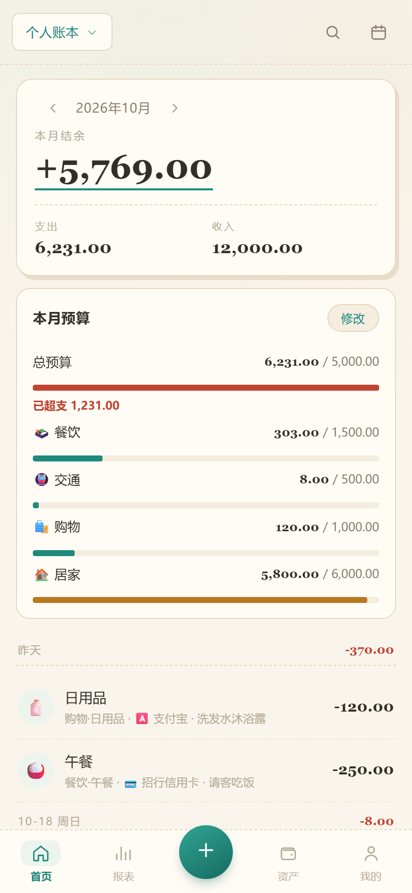
小青账 HTML 版是一款纯前端、单文件的个人记账工具，功能结构参考了移动端应用「小青账」， 用一份 HTML 文件重新实现。双击文件用浏览器打开即可使用，不需要安装、不需要注册、不产生任何网络请求， 所有数据保存在你自己的浏览器里。
| 模块 | 能做什么 |
|---|---|
| 多账本 | 默认个人 / 家庭 / 旅行 3 个账本，可新建、改名、换图标、删除；账本之间账户、分类、账单、预算完全隔离 |
| 记账 | 支出、收入两大类；数字键盘录入；一级 + 二级分类；选择付款账户；备注与历史备注快捷标签；自定义日期 |
| 退款关联 | 记收入时可关联本月某笔支出，自动带出金额、账户与「退款：xxx」备注 |
| 账单管理 | 按日期分组展示；点开看详情；可修改（原地更新）与删除（二次确认）；余额自动联动 |
| 搜索 | 按备注、分类、账户、金额、日期关键词检索当前账本的账单 |
| 报表 | 当日收支趋势折线图 + 分类占比环形图，支持一级 / 二级分类粒度切换 |
| 资产 | 多账户余额管理；净资产 / 总资产 / 总负债汇总；账户可增删改；支持自定义支付方式 |
| 预算 | 月度总预算 + 分类预算，每个账本独立设置；分类预算可自定义新增、改名、删除（含新建自有分类）；进度条与超支预警；可将上月结余结转到本月 |
| 日历 | 月历视图，有收支的日期打点（红=支出／绿=收入），点日期查看当日明细 |
| 分类管理 | 支出 / 收入两套分类，支持新增一级与二级分类、改图标改名称、删除 |
| 数据 | 导出 JSON 全量备份或 CSV 账单（Excel 可直接打开）；导入支持「合并」与「覆盖」两种方式 |
| 隐私 | 4 位 PIN 锁（哈希存储）、深色模式、无广告无追踪 |
| 项目 | 说明 |
|---|---|
| 文件形态 | 单个 qingzhang.html（约 130 KB），无外部依赖、无 CDN、无图片外链 |
| 浏览器 | Chrome / Edge / Safari / 微信内置浏览器等现代浏览器；手机浏览器可「添加到主屏幕」当 App 用 |
| 屏幕适配 | 按手机竖屏设计（414 × 896 基准），桌面浏览器中居中显示 |
| 数据位置 | 浏览器 localStorage，键名 qingzhang.v1 |
| 网络 | 完全离线可用；不会上传任何数据 |
主界面由「顶栏 + 内容页 + 底部四页签 + 中间悬浮按钮」组成，四个页签各自承载一类工作：
qingzhang.html，或访问部署好的在线地址。首次打开会自动生成
3 个账本、5 个个人账户、33 个分类和 7 条示例账单，方便你先看到成品效果。实测中在「个人账本 · 2026年10月」记一笔 128.00 元「餐饮-晚餐」，付款账户选「支付宝」：账单数由 7 条变为 8 条， 支付宝余额由 5,000.00 变为 4,872.00，本月支出由 6,231.00 变为 6,359.00，三处数字同时更新，页面无刷新、无报错。
以下每节按「用途 → 怎么操作 → 截图 → 实测表现 → 注意事项」展开，可按需跳读。
用途：一眼看清本月结余、支出、收入，并浏览每一笔账单。
+，负数带 −。‹ › 翻看历史月份；切到没有账单的月份会显示「本月还没有账单」空状态。初始数据显示「2026年10月 / 本月结余 +5,769.00 / 支出 6,231.00 / 收入 12,000.00」，账单分为 5 个日期组、共 7 条。
点击 › 切到 11 月后出现空状态，点 ‹ 回到 10 月，账单数量与合计完全恢复。
用途：记录一次花钱，并让它自动从对应账户余额里扣掉。
.）、退格（⌫）；
左侧 ¥ 后的大数字就是当前金额，例如依次点 1、2、8 得到 128.00。✓。保存后页面回到首页，新账单出现在最上方，并弹出「已保存」提示。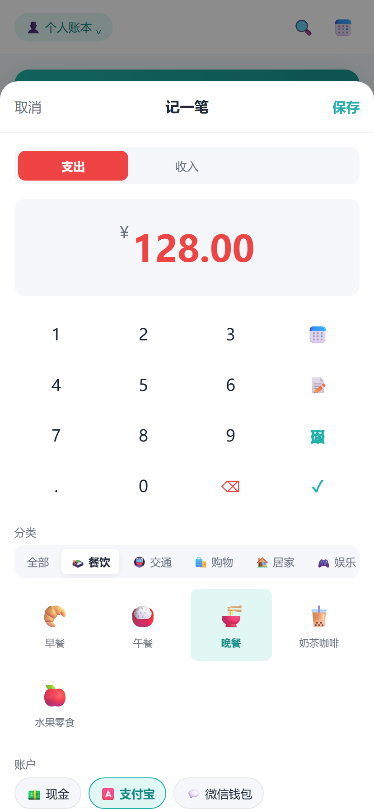
键盘连续输入 1、2、8 → 显示 128.00；按一次 ⌫ → 12.00；
再输 8 并点 .、5 → 128.50。
选「餐饮 → 晚餐」后该格子高亮，页签自动落在「餐饮」上；选「支付宝」后账户按钮描边变色。
保存后：账单 7 → 8 条，支付宝 5,000.00 → 4,872.00，本月支出 6,231.00 → 6,359.00。
键盘右侧四个功能键：📅 对应下方日期框、📝 直接把光标跳到备注、
✓ 相当于「保存」；🖼 为图片凭证入口，当前版本仅提示「图片上传功能演示版未启用」。
用途：记录工资、兼职、红包等进账；买完东西退款时，把退款挂到原来那笔支出上，方便对账。
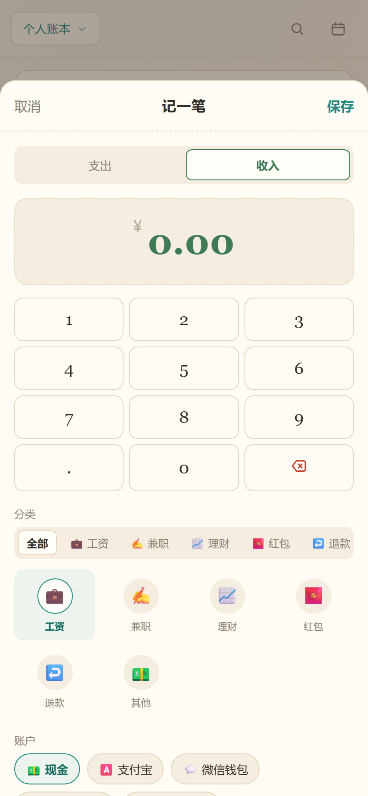
切到收入后分类页签变为「全部 / 💼 工资 / ✍️ 兼职 / 📈 理财 / 🧧 红包 / ↩️ 退款 / 💵 其他」。
点关联列表第一条（2026-10-14 的 18.00 元支出）后，金额自动变为 18.00，
备注自动变为「退款：豆浆油条」，被选中的候选项描边高亮；保存后该账单带有 refundOf 关联标记。
关联原账单只自动带金额、账户和备注，不会自动带分类。退款场景建议在分类里手动选「↩️ 退款」， 这样报表里退款与正常收入能分开统计。
用途：核对某笔账单的完整信息，或修正记错的金额、分类、账户、备注。
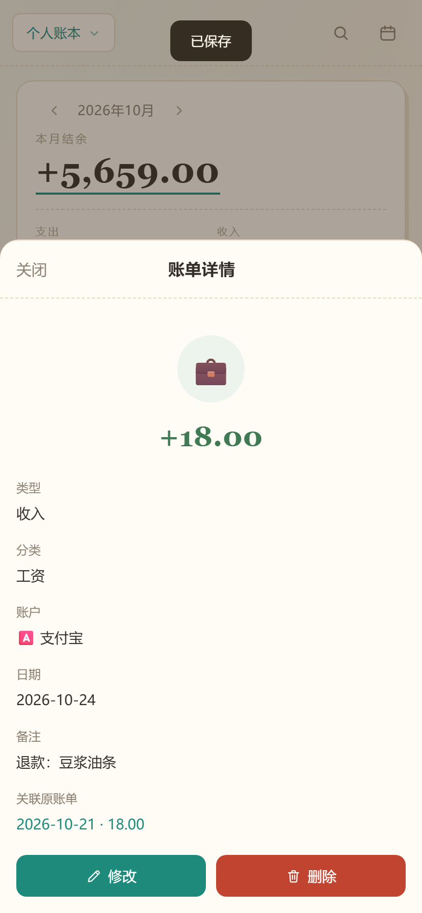
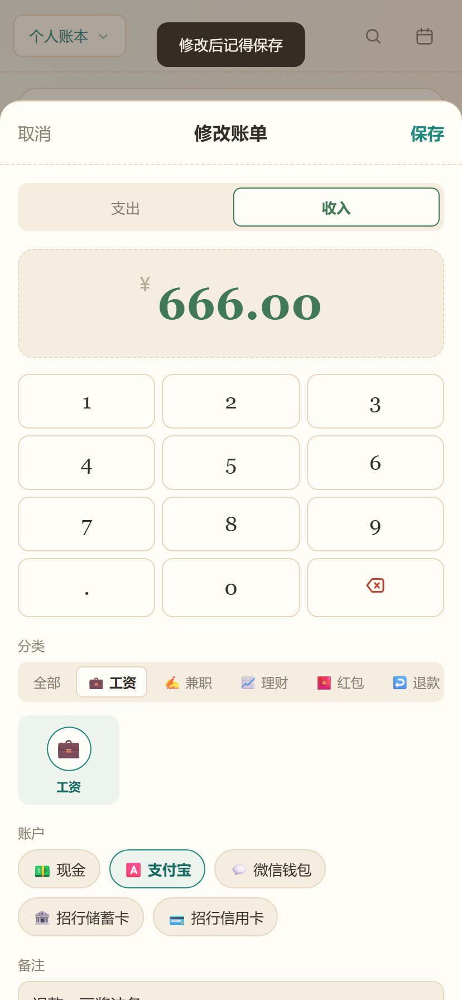
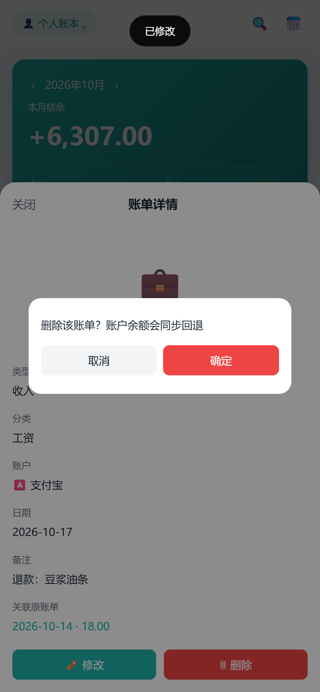
把一笔 18.00 元的收入改为 666.00 元：保存后账单总量不变（9 条，未新增），该账单 id 未变， 关联账户余额按差额 +648 变动（4,890 → 5,538）。删除时账单数 9 → 8，账户余额同步回退。
支出：保存时从账户扣减，删除时加回；收入：保存时增加，删除时扣回； 修改：先反向冲销旧值，再套用新值，等价于「只调整差额」。
用途：在一个月几十上百条记录里快速找到某笔账。
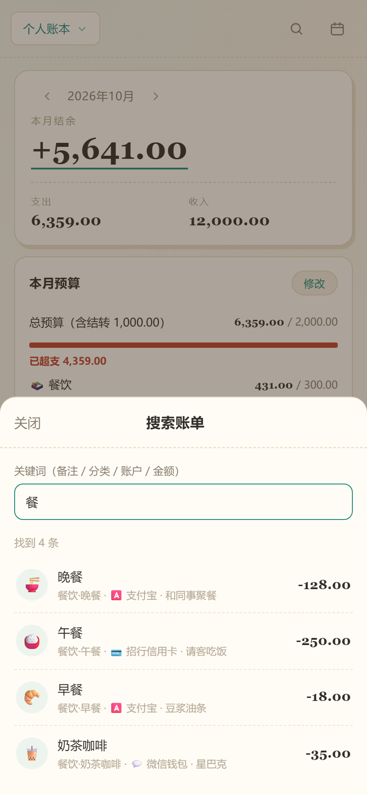
搜「餐」返回 4 条（晚餐、午餐、早餐、奶茶咖啡）；搜「128」按金额命中； 输入不存在的关键词时显示空状态并提示「换个关键词试试」。
搜索只覆盖当前账本，不跨账本检索。要找家庭账本的记录，请先切换账本再搜。
用途：看清「哪天花得多」「钱主要花在哪些类别」。
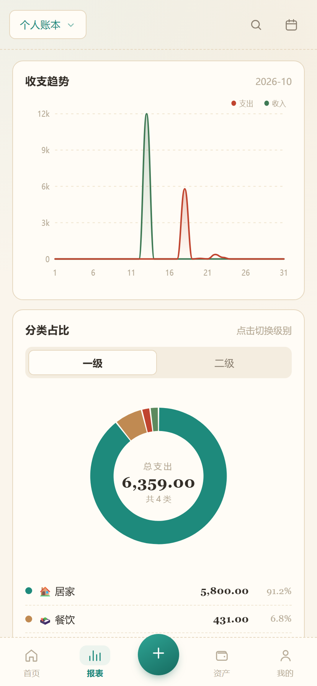
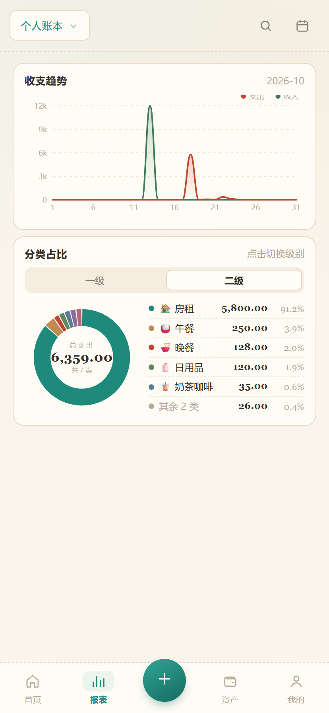
一级粒度下统计出 4 行，首行为「🏠 居家 5,800.00 / 91.2%」；切到二级后变为 7 行。 折线图与环形图均为内置 SVG 绘制，无外部图表库，断网也能正常显示。
环形图只统计支出，收入不参与占比；某月没有支出时图表区为空并提示「当月无支出」。
用途：管理现金、支付宝、微信、银行卡、信用卡等账户，随时知道「我到底有多少钱」。
▾ 展开 17 个图标 /
6 个支付方式预设，也可以直接键入新值（例如类型写「数字人民币」「美团月付」）。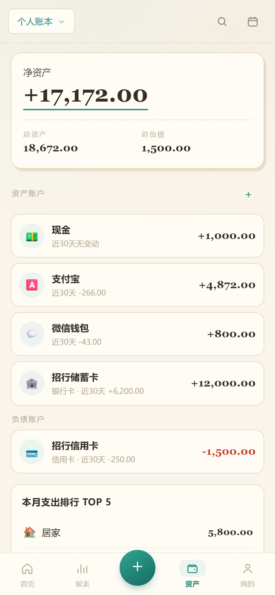
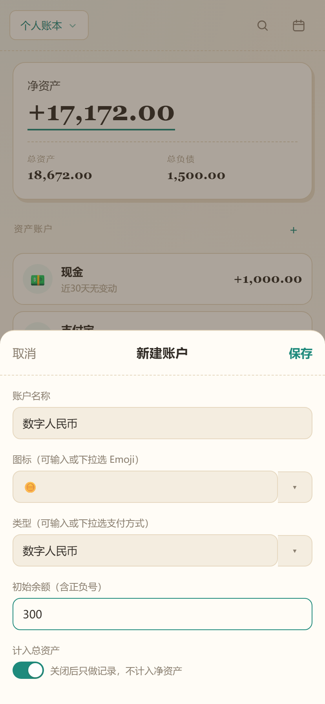
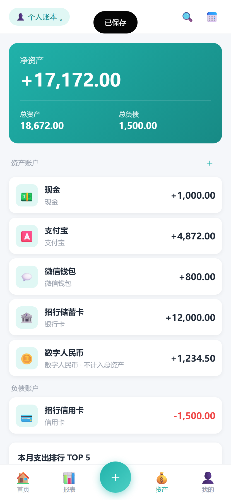
新增账户「数字人民币」，图标 🪙、类型手输「数字人民币」、余额 300： 账户数 5 → 6，类型字段完整保留自定义值。把它余额改为 1,234.50 后列表立即显示「+1,234.50」。 删除该账户时弹确认「删除账户"数字人民币"？」，确认后账户数回到 5。
删除账户不会删除关联账单，这些账单会显示为「未选账户」，金额与记录仍然保留。 关闭「计入总资产」的账户，其余额变动不会影响净资产数字。
用途：设定月度总预算与分类预算，超支时首页直接预警。所有账本（个人、家庭、旅行以及新建账本）都能单独设置，互不影响。
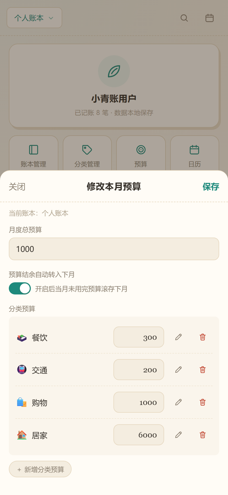
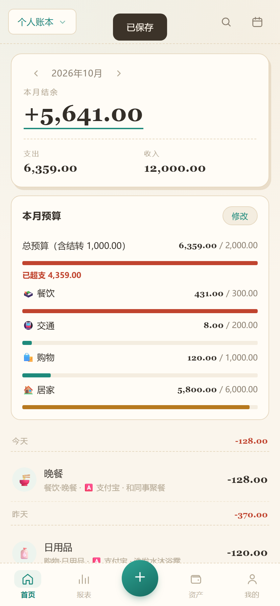
设总预算 1,000、餐饮 300、交通 200，并打开结转：首页显示
「总预算（含结转 1,000.00）6,359.00 / 2,000.00 已超支 4,359.00」，餐饮行显示「431.00 / 300.00」进度条转红。
各分类预算写入 budgets[l1].categories，刷新后仍然保留。
进度条已用比例 < 80% 为青色；≥ 80% 转为橙色（提醒）；≥ 100% 转为红色并显示「已超支 X」。 预算只是提醒，不会阻止你继续记账。
用途：用月历的视角看「哪些天有收支」，并快速查看某一天的明细。
‹ › 翻月；右上角「回到今天」一键跳回当月并选中今天。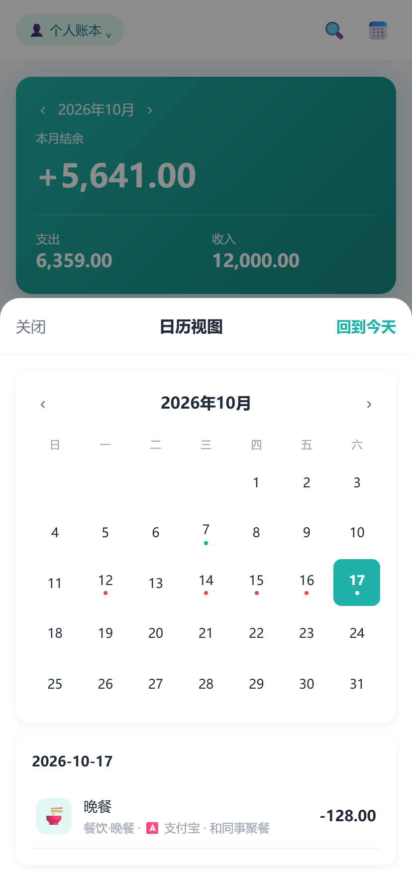
2026 年 10 月渲染出 35 个格子，其中 6 天带收支圆点；点击 10-07 后下方正确列出当日账单； 翻到 9 月再点「回到今天」能准确回到 2026年10月。
用途：把「个人」「家庭」「旅行」「装修」等不同场景的账分开，互不干扰。
✓。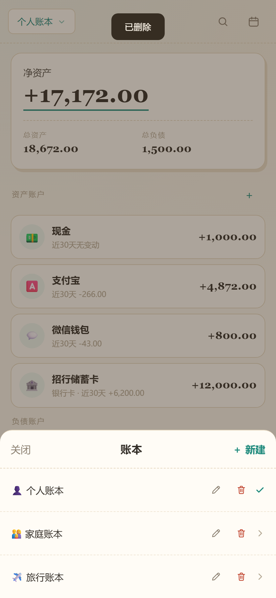
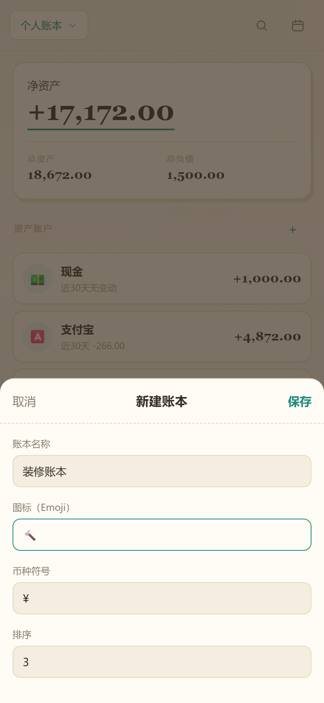
初始 3 个账本；切到「家庭账本」后账户列表由 5 个变为 2 个（家庭现金、家庭支付宝），账单也随之清空。 新建「🔨 装修账本」后账本数 3 → 4，并自动带上独立的空预算表；点当前账本「个人账本」正确进入「编辑账本」并带出原名。
删除账本不可恢复：该账本下的账单、账户、分类与预算会一起清掉。删除前建议先在「我的 → 导出」存一份 JSON 备份。系统强制至少保留一个账本，只剩一个时删除入口会自动隐藏。
用途：定制自己的分类体系，把默认分类改得更贴合习惯。
✎（编辑）和 🗑（删除）。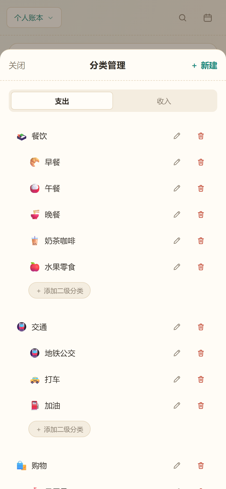
支出分类下有 27 个可编辑项。在「餐饮」下新建二级分类「🌙 夜宵」，保存后立即出现在列表中； 点删除时弹出二次确认，确认后该分类从数据中移除。切到「收入」页签正确显示 6 行收入分类。
删除一级分类会连同其下所有二级分类一起删除，确认框会告诉你牵连几个二级分类； 被删分类下的账单不会消失，只会变成「未分类」，可在账单详情里重新指定分类。
用途：备份数据、迁移到其他设备，或把账单交给 Excel 做进一步分析。
JSON 全量 备份所有数据（账本、账户、分类、预算、账单），
CSV 账单 只导出账单表格，方便 Excel 打开。全部 或 当前账本。qingzhang_YYYY-MM-DD.json / .csv。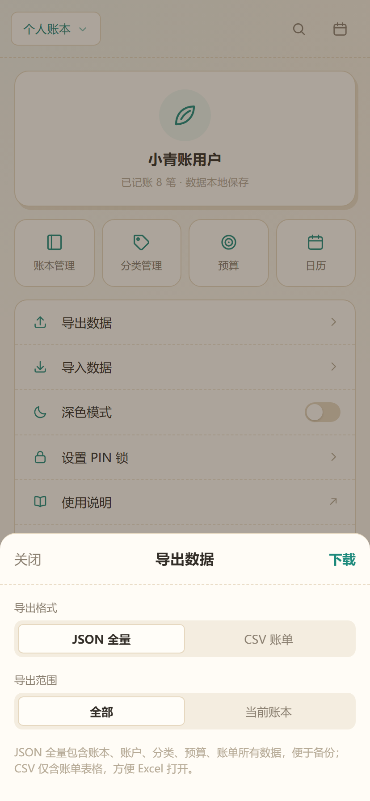
导出的 JSON 含 ledgers / accounts / categories / bills / budgets 等完整字段，账单条数与页面一致。
CSV 表头为「日期,类型,分类,账户,金额,备注,转账对方」，行数 = 账单数 + 1，并带 UTF-8 BOM，Excel 打开中文不乱码。
「覆盖」不可撤销。若不确定，先导出一次 JSON 备份，再执行覆盖导入。 重复导入同一个备份文件不会产生重复账单（相同 id 会被跳过）。
用途：夜间记账不刺眼。
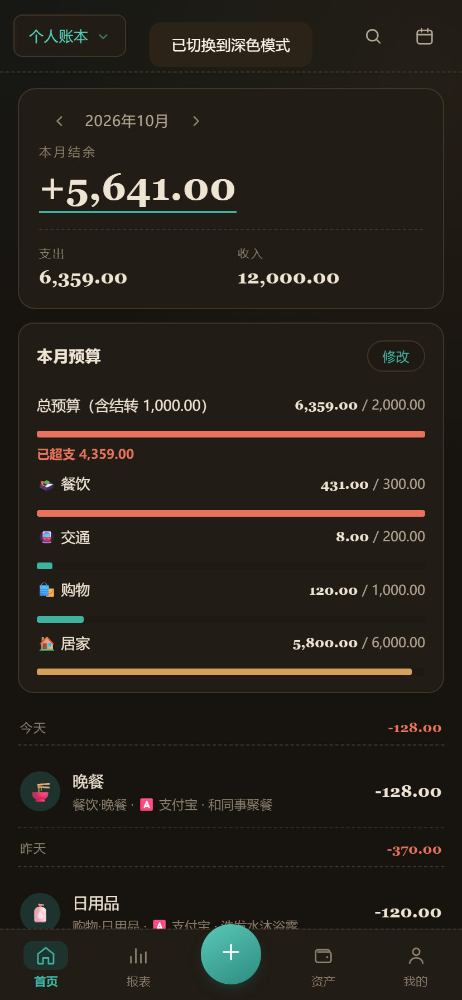
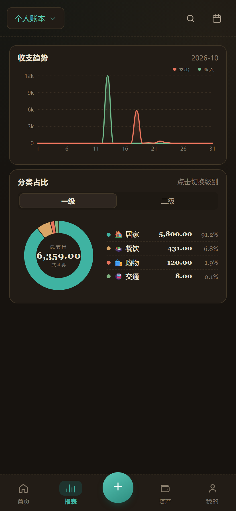
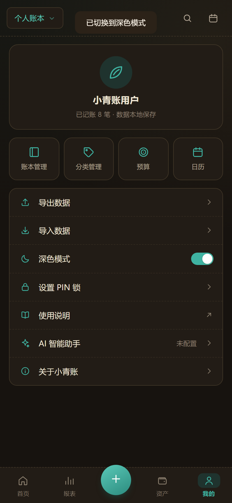
用途：给应用加一道 4 位数字锁，防止手机被别人随手翻开。
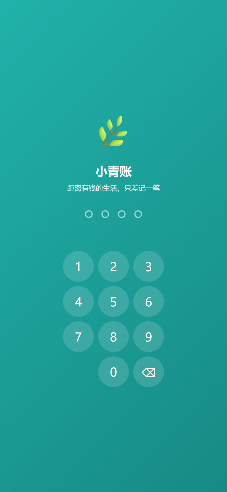
设 PIN 为 1234 后，存储里保存的是哈希值而非明文；刷新页面出现锁屏，
输入 0000 提示「PIN 错误」，输入 1234 正常解锁；再次进入设置并留空保存后，pinHash 被清为 null，锁屏不再出现。
PIN 只是「防顺手一看」的轻量保护，数据本身没有加密，不要用它保存敏感信息。 忘记 PIN 将无法进入应用，只能清除该站点的浏览器数据（会同时清掉账本），因此设置前请先导出一份 JSON 备份。
「我的 → ℹ️ 关于小青账」展示版本信息与技术说明，可确认当前使用的是 HTML 复刻版以及数据全部本地存储的特性。
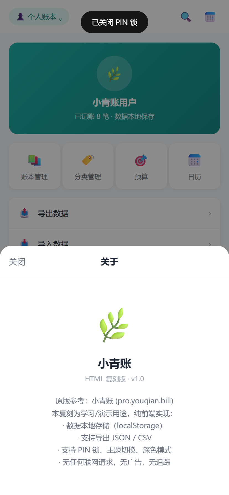
这一页是各类设置的总入口：上方四个快捷方块（账本管理 / 分类管理 / 预算 / 日历），下方是导出、导入、深色模式、PIN 锁、关于。
下面四个场景串起了日常最常用的操作链路，可以照着做一遍熟悉手感。
1 2 8，金额显示 128.00。12000 → 分类选「💼 工资」→ 账户选「🏦 招行储蓄卡」→ 备注「10 月工资」→ 保存。JSON 全量 + 全部 → 下载，得到 qingzhang_2026-10-17.json。迁移后两台设备各自独立，不会自动同步。若两边都在记账，再次「合并」导入即可把新增记录合并进来（相同 id 自动跳过）。
所有数据都放在当前浏览器的 localStorage 里，键名为 qingzhang.v1，结构大致如下：
// localStorage["qingzhang.v1"] { "ledgers": [ { "id":"l1", "name":"个人账本", "icon":"👤", "currency":"¥" } ], "accounts": [ { "id":"a2", "ledgerId":"l1", "name":"支付宝", "type":"支付宝", "balance":4872, "includeInTotal":true } ], "categories": [ { "id":"c1c", "name":"晚餐", "type":"expense", "parentId":"c1", "icon":"🍜" } ], "bills": [ { "id":"b…", "type":"expense", "amount":128, "accountId":"a2", "categoryId":"c1c", "date":"2026-10-17", "remark":"和同事聚餐", "refundOf":null } ], "budgets": { "l1": { "total":1000, "carryOver":true, "categories":{ "c1":300 } } }, "pinHash": "-6wp8j5…", "settings": { "theme":"light" } }
| 问题 | 解答 |
|---|---|
| 数据存在哪里？别人能看到吗？ | 存在你当前浏览器的 localStorage 中，不上传服务器；同一台设备的其他浏览器、其他设备都看不到。 |
| 分享链接给别人，他们会看到我的账吗？ | 不会。每个人打开都是自己浏览器里的一套数据，互不影响；但这也意味着不能多人共享同一个账本。 |
| 换手机怎么把账搬过去？ | 旧设备导出 JSON → 新设备导入（覆盖）。参考场景 4.4。 |
| 金额记错了怎么办？ | 点开账单 →「✏️ 修改」改数字即可，账户余额会自动按差额调整，不需要删了重记。 |
| 为什么账户余额和我实际不一致？ | 账户余额 = 初始余额 + 收入 − 支出。若某笔账单记错了账户或删过账户，可在「资产」里编辑账户、直接改为实际余额。 |
| 导出 CSV 打开是乱码？ | 文件已带 UTF-8 BOM，用 Excel / WPS 直接双击打开即可；若用记事本另存，请保持 UTF-8 编码。 |
| 忘记 PIN 了还能进吗？ | 不能。只能清除该站点浏览器数据（会丢失账本）。因此设置 PIN 前务必备份 JSON。 |
| 预算超了还能继续记吗？ | 能。预算只是提醒，不会拦截记账。 |
| 为什么首页和报表的数字一样，但和资产不同？ | 首页/报表统计的是当月流水；资产页看的是账户余额与净资产，两者口径不同。 |
| 为什么分类里选不到「收入」分类？ | 先点「记一笔」左上角的「收入」，分类面板会自动切换到收入分类；两套分类互不通用。 |
① 不支持图片/票据上传（键盘 🖼 仅提示未启用）；
② 不支持转账（原版应用的转账功能在复刻版中已移除，历史转账账单仍可查看）；
③ 无账号体系与云同步；
④ 不支持支付宝 / 微信账单自动导入（仅支持本应用导出的 JSON/CSV）；
⑤ 账本支持新建、改名、删除（至少保留一个），删除会连带清空该账本的账单、账户、分类与预算；
⑥ 金额仅支持人民币符号展示，不处理多币种汇率换算。
本说明书编写前，用浏览器自动化对应用做了 18 组、136 项功能检查， 覆盖四个页签、全部弹层与核心数据联动，结果：136 项全部通过，控制台 0 报错。 测试环境：Chromium 无头浏览器，视口 414 × 896（iPhone 竖屏），数据从空 localStorage 开始初始化。
| # | 测试模块 | 检查项 | 结果 |
|---|---|---|---|
| 00 | 初始化与默认数据 | 6 | 全部通过 |
| 01 | 首页：月度汇总 + 账单列表 | 6 | 全部通过 |
| 02 | 记一笔 · 支出（键盘/分类/账户/备注） | 13 | 全部通过 |
| 03 | 记一笔 · 收入 + 退款关联 | 11 | 全部通过 |
| 04 | 账单详情：查看 / 修改 / 删除 | 12 | 全部通过 |
| 05 | 报表：趋势折线 + 分类占比 | 5 | 全部通过 |
| 06 | 资产：净资产 / 账户增删改 | 18 | 全部通过 |
| 07 | 账本：切换 / 新建 / 编辑 | 10 | 全部通过 |
| 08 | 分类管理：新增 / 编辑 / 删除 | 8 | 全部通过 |
| 09 | 预算：总预算 / 分类预算 / 超支预警 | 8 | 全部通过 |
| 10 | 日历视图 | 7 | 全部通过 |
| 11 | 导出：JSON / CSV | 8 | 全部通过 |
| 12 | 导入：合并模式 | 4 | 全部通过 |
| 13 | 深色模式 | 3 | 全部通过 |
| 14 | PIN 锁：设置 / 校验 / 解锁 / 关闭 | 7 | 全部通过 |
| 15 | 关于页 | 1 | 全部通过 |
| 16 | 搜索：关键词匹配 + 空状态 | 6 | 全部通过 |
| 17 | 数据持久化（刷新后保留） | 3 | 全部通过 |
| 合计 | 136 | 通过 136 / 失败 0 / 控制台错误 0 | |
| 场景 | 实测结果 |
|---|---|
| 初始数据 | 3 个账本 / 5 个个人账户 / 33 个分类 / 7 条示例账单 |
| 记一笔支出 128 元 | 账单 7 → 8 条；支付宝 5,000.00 → 4,872.00；本月支出 6,231.00 → 6,359.00 |
| 修改账单 18 → 666 元 | 账单总数不变；id 不变；账户余额 4,890 → 5,538（按差额联动） |
| 删除账单 | 账单 9 → 8；账户余额回退；二次确认文案「删除该账单？账户余额会同步回退」 |
| 新增自定义账户 | 账户 5 → 6；类型保存为自定义值「数字人民币」；删除后回到 5 |
| 报表 | 一级 4 行 / 二级 7 行；首行「🏠 居家 5,800.00 91.2%」 |
| 资产汇总 | 净资产 +17,172.00；总资产 18,672.00；总负债 1,500.00 |
| 预算（含结转） | 总预算 1,000 + 结转 1,000 → 可用 2,000；已用 6,359 → 「已超支 4,359.00」 |
| 日历 | 10 月渲染 35 格，6 天有收支圆点；点日期正确列出当日明细 |
| 导出 | qingzhang_2026-10-17.json 字段完整；CSV 9 行（含表头）、带 BOM |
| 搜索「餐」 | 命中 4 条；无结果时显示空状态；点结果进入详情并自动收起搜索面板 |
| PIN 锁 | 存储为哈希值；错误 PIN 提示「PIN 错误」；正确 PIN 解锁；留空保存即关闭 |
测试过程发现并修复了以下 5 处问题，文中描述的行为均为修复后的实际表现：